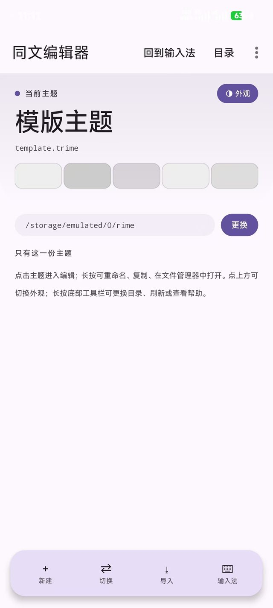
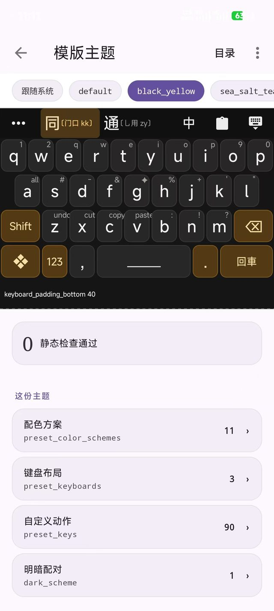
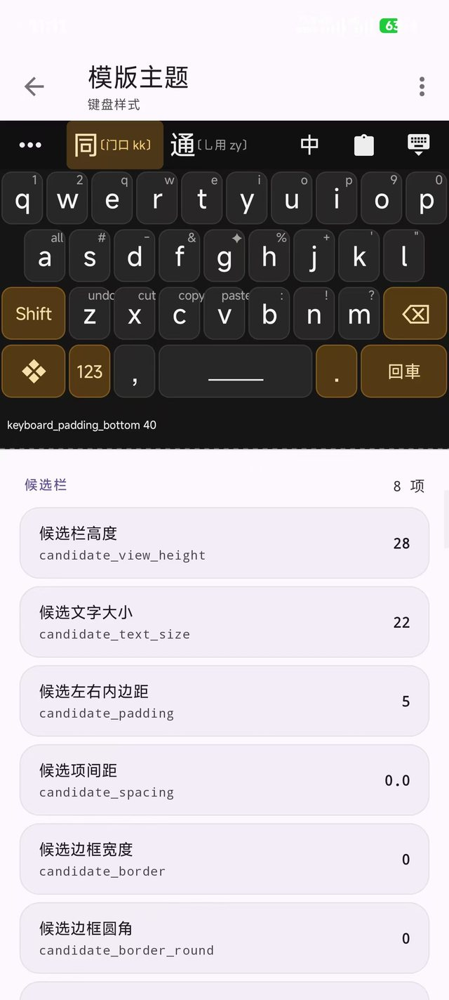
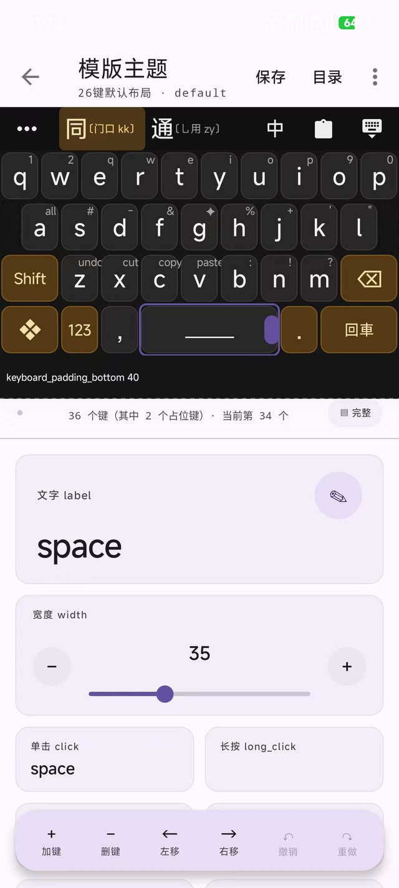
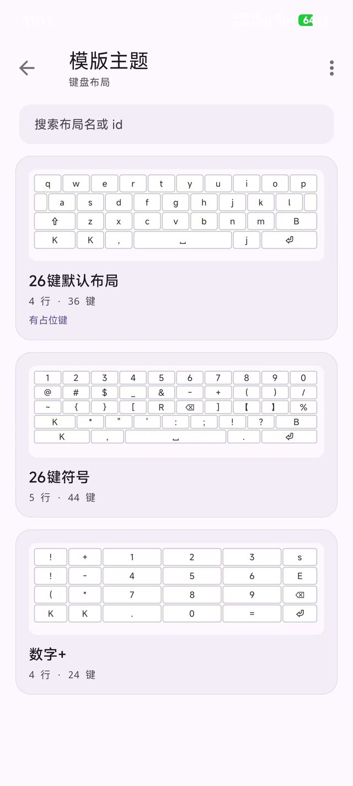
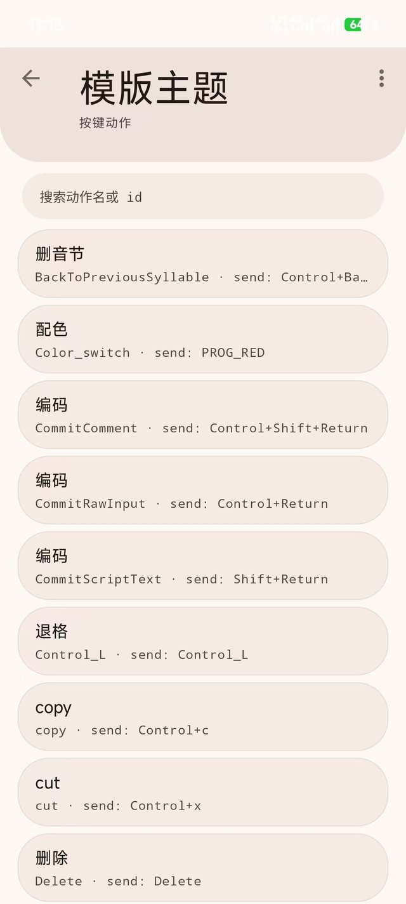

01 / THEMES
打开就看见所有主题 一份主题 = 一个 .trime.yaml
主题目录里有什么，这里就列什么。每张卡片带五块色卡，是这个主题下几套配色方案的缩略—— 不用点进去就能看出它是深是浅、偏冷还是偏暖。
- 色卡预览：每份主题并排显示它的配色方案，深浅一眼分得出
- 底部四件事：新建、切换、导入、回到输入法
- 长按可重命名、复制，或直接在文件管理器里打开原文件
- 路径栏显示主题实际存放位置，
/storage/emulated/0/rime可随时更换

主界面 · 主题列表
02 / OVERVIEW
改一个字段，键盘立刻变 上面是真键盘，不是示意图
进入一份主题，顶部直接渲染真实键盘——用的是你当前这份主题的配色、字号、间距， 点一下配色方案的名字就换一套，所见即所得。
- 配色方案切换：跟随系统 / default / black_yellow / sea_salt_teal… 横向切换
- 静态检查通过：这份 YAML 能不能被输入法读出来，进编辑之前就告诉你
- 下方按「这份主题」列出四类内容：配色方案 11、键盘布局 3、自定义动作 90、明暗配对 1
- 每类后面带数字，点进去就是对应的编辑页

主题总览 · 配色方案切换
03 / STYLE
候选栏、字号、边框，逐项调 中文名 + YAML 字段名 + 当前值
每一行左边是中文说明，下面一行小字是它在 YAML 里的真实字段名，右边是当前值。
改的时候你始终知道自己在动文件的哪一行，不用去猜 candidate_border_round 到底控制什么。
- 候选栏高度
candidate_view_height28 - 候选文字大小
candidate_text_size22 - 候选左右内边距
candidate_padding5 · 候选项间距candidate_spacing0.0 - 候选边框的宽度与圆角，拖到 0 就是无边框
- 按组分页（当前「候选栏」共 8 项），改完上方键盘预览同步刷新

键盘样式 · 候选栏
04 / LAYOUT
在画布上拖，把键排好 36 个键，连占位键都算得清
键盘布局不是表格，是画布。点中任意一个键（图里是空格键），下方立刻变成它的属性面板： 文字、宽度、单击动作、长按动作。宽度用滑杆配加减键，按 5 一档调，不用敲数字。
- 标题栏实时统计：36 个键（其中 2 个占位键）· 当前第 34 个
- label 改键面文字，width 改宽度（空格当前 35）
- click / long_click 指定单击和长按要发送什么
- 底部六个动作：加键、删键、左移、右移、撤销、重做
- 改动先进草稿，点「保存」才写回文件——中途退出不会写坏主题

键盘布局 · 编辑中
05 / LAYOUTS
每套布局都有一张真缩略图 不是占位图，是照真数据画的
一份主题里通常有字母、符号、数字好几套布局，来回切。这里每套都按自己的实际键位画缩略图， 再标上行数和键数——26 键符号那套 5 行 44 键，一眼就能看出比字母布局多一行。
- 真实缩略图：按键比例、行数、特殊键位都对得上
- 「4 行 · 36 键」这样的规模标注，旁边提示有占位键
- 顶部可直接搜索布局名或 id
- 新增、删除、重命名布局都在这一页

键盘布局 · 列表
06 / ACTIONS
90 个动作，说清每个键干什么 中文名 / 动作 id / 实际发送内容
输入法里能自定义的不只是字母键。这里把主题定义的全部按键动作列出来， 每一行都写明白它叫什么、内部 id 是什么、最终向输入法发送什么指令。
- 删音节 ·
BackToPreviousSyllable· send: Control+BackSpace - 编码 ·
CommitComment· send: Control+Shift+Return - 配色 ·
Color_switch· send: PROG_RED —— 一个键切整套配色 - 支持搜索动作名或 id，改动作的发送内容、增删动作
- 定义好的动作可以在布局页直接挂到任意键的 click / long_click 上

按键动作 · 列表